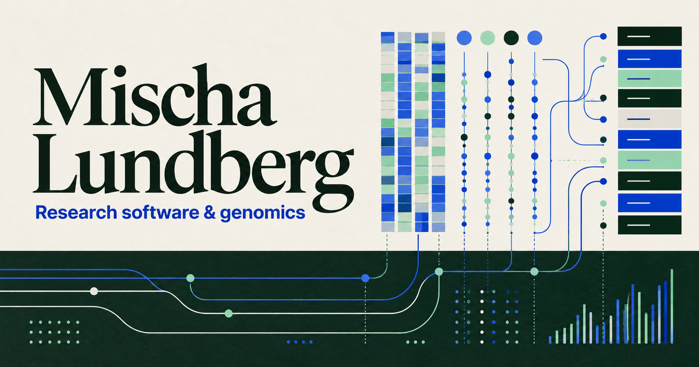

Psychiatric genetics · Research software
Making complex
biological data
useful.
I’m Mischa Lundberg. I study psychiatric genetics and build open-source tools for large-scale biological research.
Psychiatric genetics
✦Polygenic scores
✦Registry studies
✦Open science
Current research
From genetic liability to population-level insight.
My current research focuses on psychiatric genetics — particularly polygenic scores and registry-based studies.
I work with large biobank and population-register datasets to study genetic risk, familial patterns, and heterogeneity across psychiatric outcomes.

Selected repositories
Tools built for real research.
A hand-picked selection based on research relevance—not short-term traffic. You can replace these with your preferred flagship projects.
GetPheno
A Python tool for extracting phenotypes from large, biobank-scale files across research cohorts and registries.
CH Methylation
A portable application for calculating CH methylation from FASTA sequences and producing research-ready outputs.
extract_sequences
A Python tool for extracting DNA sequences from large genomic datasets.
CpG Methylation Pipeline
A Python pipeline for analyzing CpG methylation data from large-scale epigenomic studies.
Selected publications
Peer-reviewed research.
Manually curated to exclude posters and conference abstracts. First and co-first authorship is highlighted.
Multiscale analysis and functional validation of the cellular and genetic determinants of skeletal disease
R. C. Chai, M. Lundberg, B. Freudenthal, J. T. Smith, et al.
Changes in Genetic Contributions to ASD and ADHD by Year of Diagnosis
S. LaBianca, M. L. Lousdal, M. D. Krebs, O. S. Hansen, et al.
The role of genetic liability for psychiatric disorders and personality traits in post-COVID syndrome: data from three Nordic population cohorts
L. Quinn, I. H. Caspersen, I. Magnúsdóttir, Y. Wang, M. Lundberg, et al.
Novel Alzheimer’s disease genes and epistasis identified using machine learning GWAS platform
M. Lundberg, L. M. F. Sng, P. Szul, R. Dunne, A. Bayat, et al.
Shared genetic architecture between eating disorders, mental health conditions, and cardiometabolic diseases
J. Meijsen, K. Hu, D. Wei, S. Aicoboaie, H. L. Davies, et al.
Genetic liability estimated from large-scale family data improves genetic prediction, risk score profiling, and gene mapping for major depression
M. D. Krebs, K.-L. G. Hellberg, M. Lundberg, V. Appadurai, et al.
Developmental language disorder — heritability and genetic correlations with other disorders affecting language
R. Nudel, R. V. Christensen, N. Kalnak, M. Lundberg, et al.
Estimating indirect parental genetic effects on offspring phenotypes using virtual parental genotypes
L.-D. Hwang, J. D. Tubbs, J. Luong, M. Lundberg, et al.
Connect
M / 02
Research moves faster when the tools stay out of the way.
My work sits where psychiatric genetics, population data, and practical software meet. I create tools and analyses that make large datasets easier to navigate and research easier to repeat.